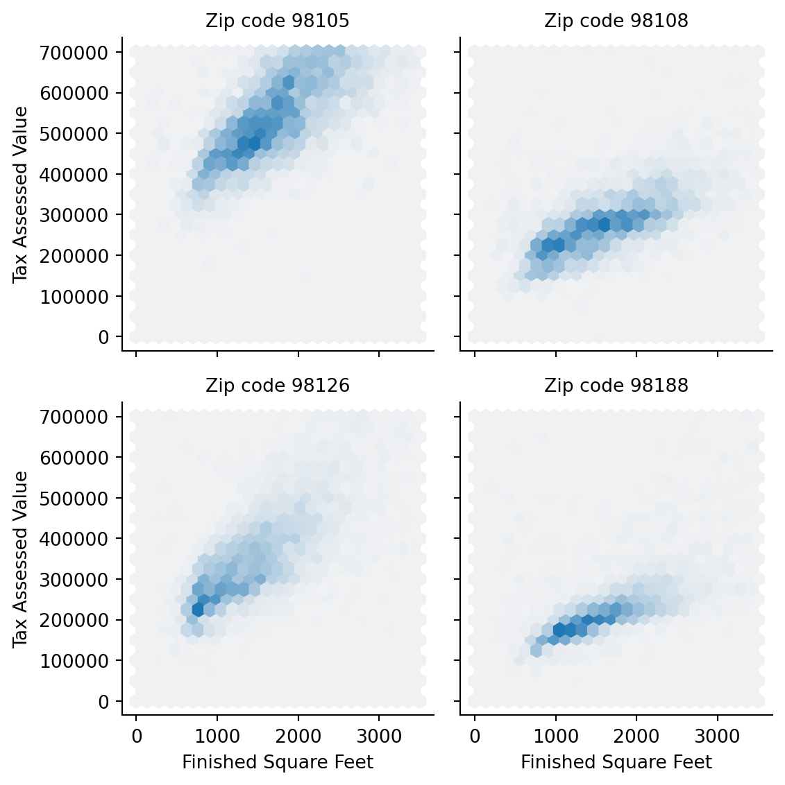

| Count | |
|---|---|
| Cause | |
| Carrier | 64263.16 |
| ATC | 84856.50 |
| Weather | 11235.42 |
| Security | 343.15 |
| Inbound | 118427.82 |
Análise de dados
Introdução à Análise Exploratória de Dados
Prof. Marcus Carvalho @ DCX / CCAE / UFPB
Exploratory Data Analysis (EDA)
O que é EDA?
Sumarização e visualização de dados para analisar suas características principais
Ciclo iterativo:
- Faça perguntas sobre os dados.
- Procure respostas visualizando, transformando e modelando os dados.
- Use o que aprendeu para refinar perguntas e/ou fazer novas perguntas.
Inicialmente, investigue qualquer ideia que surgir
- Algumas darão certo, outras não.
“Far better an approximate answer to the right question, which is often vague, than an exact answer to the wrong question, which can always be made precise.” — John Tukey
Fazendo perguntas
- Seu objetivo na EDA é desenvolver um entendimento dos dados
- A forma mais fácil é fazendo perguntas para guiar sua investigação
- Foca sua atenção em partes específicas dos dados
- Ajuda a decidir que gráficos, modelos ou transformações fazer
- É um processo criativo
- Produzir grande quantidade de perguntas para obter qualidade
- Como fazer perguntas reveladoras sem conhecer os dados?
- Cada pergunta expõe um novo aspecto dos dados
- Aumenta a chance de novas descobertas
- Leva a insights interessantes deixando as perguntas levarem a outras
Tipos de perguntas
- Dois tipos muito úteis para novas descobertas:
- Que tipo de variação ocorre em cada variável?
- Que tipo de covariação ocorre entre as minhas variáveis?
- Algumas definições:
- Variável: quantidade, qualidade ou propriedade que se pode medir
- Valor: estado de uma variável quando você a mede (pode mudar)
- Observação: conjunto de medições feitas em condições similares
Variância
O que é variância e por que analisá-la?
Tendência de variável mudar seu valor entre uma medição e outra
Cada variável tem seu próprio padrão de variação
- Pode revelar informações interessantes
Visualizar a distribuição dos dados ajuda a entender padrões
Como visualizar distribuições?
- Depende se dados são categóricos ou contínuos
Visualizando dados categóricos
Variável que só pode assumir pequeno conjunto de valores
Examinando a distribuição com gráfico de barras:
Visualizando dados contínuos
- Variável com valor em um conjunto infinito de valores possíveis
- Histograma ou computando faixas manualmente
Visualizando dados contínuos: Histograma
- O parâmetro bins define a quantidade de intervalos
- Exemplo para estados com menos de 10 milhões de habitantes
Visualizando dados contínuos: density plot
- Similar ao histograma, mas com linha contínua suavizada
- Exemplo para taxas de homicídio nos Estados Unidos
Visualizando dados contínuos: percentis
- Faz recortes dos dados ordenados em posições específicas
- Pode ser usado para examinar distribuição dos dados
- É muito comum reportar os quartis (25, 50 e 75 percentil)
- 50 percentil é a mediana, divide os dados ao meio
- Também é usado para analisar valores na cauda (ex: 99 percentil)
- Exemplo: percentis para taxa de homicídios nos Estados Unidos
Visualizando dados contínuos: boxplot
- Mostra visualmente estatísticas populares de uma distribuição

Visualizando dados contínuos: boxplot
Outliers
- Outliers são valores muito distantes dos outros
- Podem ser dados com erros, mas também podem ser válidos
- Se for erro podem ser excluídos, mas com boa justificativa
- Requer investigação mais detalhada para entender o caso
- Exemplo das populações outliers e impacto nas estatísticas:
- Podem ser dados com erros, mas também podem ser válidos
Covariância
O que é covariância e por que analisá-la?
- Covariância descreve o comportamento entre variáveis.
- Tendência de 2 ou mais variáveis variarem juntas, de forma relacionada.
- Útil para encontrar padrões de relacionamento entre variáveis
- E criar modelos que estimam valores com base nessas relações
- Ex: estimar votos de candidatos com base nos gastos de campanha
- A melhor forma de identificar covariância é visualizar o relacionamento entre variáveis
- Novamente, isto depende dos tipos das variáveis
Covariância: duas variáveis categóricas
- Vamos analisar uma base de dados de empréstimos
- O nível do empréstimo (
grade) é uma variável categórica ordinal- Há uma ordem do nível melhor (A) para o pior (G)
- O resultado (
status) é uma variável não ordinal- Não há ordem pré-definida dos seus valores
Covariância: duas variáveis categóricas
- Podemos contar as observações para cada combinação
- Visualizando com tabela
pivote mapa de calor (heatmap)
- Visualizando com tabela
Covariância: uma categórica e uma contínua
- Covariância de 2 variáveis da base de dados de voôs cancelados
airline(categórica não ordinal): nome da empresa aéreapct_carrier_delay(contínua): % de atrasos causados pela empresa
| airline | pct_carrier_delay | pct_weather_delay | pct_atc_delay | |
|---|---|---|---|---|
| 0 | American | 8.153226 | 0.762097 | 1.971774 |
| 1 | American | 5.959924 | 1.585878 | 3.706107 |
| 2 | American | 7.157270 | 2.026706 | 2.706231 |
| 3 | American | 12.100000 | 0.000000 | 11.033333 |
| 4 | American | 7.333333 | 1.774194 | 3.365591 |
| ... | ... | ... | ... | ... |
| 33463 | Southwest | 6.186422 | 1.651940 | 8.798491 |
| 33464 | Southwest | 9.522167 | 0.261084 | 3.591133 |
| 33465 | Southwest | 9.164179 | 0.343284 | 2.664179 |
| 33466 | Southwest | 5.152293 | 0.122817 | 1.964520 |
| 33467 | Southwest | 3.964393 | 0.019449 | 1.700479 |
33468 rows × 4 columns
Covariância: uma categórica e uma contínua
Boxplotedensity plotda contínua agrupado pela categórica

Covariância: uma categórica e uma contínua
violin ploté outra alternativa ao boxplot
- Mostra a densidade da contínua para cada grupo da categóricas
- É mais fácil observar a concentração dos dados.
- Nota-se:
- Uma concentração mais perto de 0% para a
Alaska DeltaeUnitedcom mais valores extremos (outliers)
- Uma concentração mais perto de 0% para a
Covariância: duas variáveis contínuas
- Vamos analisar a variação diária da cotação de empresas de telecomunicação na bolsa de valores
- Se quisermos comparar a covariância da cotação de duas empresas?
- Teremos duas variáveis contínuas
| T | CTL | FTR | VZ | LVLT | |
|---|---|---|---|---|---|
| 2012-07-02 | 0.422496 | 0.140847 | 0.070879 | 0.554180 | -0.519998 |
| 2012-07-03 | -0.177448 | 0.066280 | 0.070879 | -0.025976 | -0.049999 |
| 2012-07-05 | -0.160548 | -0.132563 | 0.055128 | -0.051956 | -0.180000 |
| 2012-07-06 | 0.342205 | 0.132563 | 0.007875 | 0.140106 | -0.359999 |
| 2012-07-09 | 0.136883 | 0.124279 | -0.023626 | 0.253943 | 0.180000 |
| ... | ... | ... | ... | ... | ... |
| 2015-06-25 | 0.049342 | -1.600000 | -0.040000 | -0.187790 | -0.330002 |
| 2015-06-26 | -0.256586 | 0.039999 | -0.070000 | 0.029650 | -0.739998 |
| 2015-06-29 | -0.098685 | -0.559999 | -0.060000 | -0.504063 | -1.360000 |
| 2015-06-30 | -0.503298 | -0.420000 | -0.070000 | -0.523829 | 0.199997 |
| 2015-07-01 | -0.019737 | 0.080000 | -0.050000 | 0.355811 | 0.139999 |
754 rows × 5 columns
Covariância: duas variáveis contínuas
Scatterplotcomparando cotação diária da Verizon (V) x AT&T (T)- Com transparência (
alpha) destacamos a concentração dos pontos
- Com transparência (
Covariância: duas variáveis contínuas
- Outras alternativas:
hexbinejointplot(comkind='hex')
Covariância: duas variáveis contínuas
- Analisando tamanho x valor de casas em uma região dos EUA
| TaxAssessedValue | SqFtTotLiving | ZipCode | |
|---|---|---|---|
| 3 | 361000.0 | 2000 | 98108 |
| 4 | 459000.0 | 3150 | 98108 |
| 10 | 202000.0 | 830 | 98108 |
| 11 | 210000.0 | 1130 | 98108 |
| 12 | 193000.0 | 1560 | 98108 |
| ... | ... | ... | ... |
| 498049 | 346000.0 | 1430 | 98105 |
| 498050 | 463000.0 | 1610 | 98105 |
| 498051 | 553000.0 | 1580 | 98105 |
| 498052 | 571000.0 | 1840 | 98105 |
| 498053 | 694000.0 | 2420 | 98105 |
19690 rows × 3 columns
Covariância: duas contínuas e uma categórica
- A localização (
ZipCode) da casa também influencia o preço? - Usamos
facetspara quebrar em um subplot por categoria - Nota-se a influência tanto da localização quanto do tamanho no valor da casa
Code
def hexbin(x, y, color, **kwargs):
cmap = sns.light_palette(color, as_cmap=True)
plt.hexbin(x, y, gridsize=25, cmap=cmap, **kwargs)
g = sns.FacetGrid(kc_tax_zip, col='ZipCode', col_wrap=2)
ax = g.map(hexbin, 'SqFtTotLiving', 'TaxAssessedValue',
extent=[0, 3500, 0, 700000])
g.set_axis_labels('Finished Square Feet', 'Tax Assessed Value')
g.set_titles('Zip code {col_name:.0f}')
plt.tight_layout()
plt.show()
::::
Exemplo EDA - diamantes
- Dados de diamantes com variáveis: quilates (
caret), qualidade do corte (cut), cor (color), claridade (clarity), preço (price), etc.
| carat | cut | color | clarity | depth | table | price | x | y | z | |
|---|---|---|---|---|---|---|---|---|---|---|
| 0 | 0.23 | Ideal | E | SI2 | 61.5 | 55.0 | 326 | 3.95 | 3.98 | 2.43 |
| 1 | 0.21 | Premium | E | SI1 | 59.8 | 61.0 | 326 | 3.89 | 3.84 | 2.31 |
| 2 | 0.23 | Good | E | VS1 | 56.9 | 65.0 | 327 | 4.05 | 4.07 | 2.31 |
| 3 | 0.29 | Premium | I | VS2 | 62.4 | 58.0 | 334 | 4.20 | 4.23 | 2.63 |
| 4 | 0.31 | Good | J | SI2 | 63.3 | 58.0 | 335 | 4.34 | 4.35 | 2.75 |
| ... | ... | ... | ... | ... | ... | ... | ... | ... | ... | ... |
| 53935 | 0.72 | Ideal | D | SI1 | 60.8 | 57.0 | 2757 | 5.75 | 5.76 | 3.50 |
| 53936 | 0.72 | Good | D | SI1 | 63.1 | 55.0 | 2757 | 5.69 | 5.75 | 3.61 |
| 53937 | 0.70 | Very Good | D | SI1 | 62.8 | 60.0 | 2757 | 5.66 | 5.68 | 3.56 |
| 53938 | 0.86 | Premium | H | SI2 | 61.0 | 58.0 | 2757 | 6.15 | 6.12 | 3.74 |
| 53939 | 0.75 | Ideal | D | SI2 | 62.2 | 55.0 | 2757 | 5.83 | 5.87 | 3.64 |
53940 rows × 10 columns
Exemplo EDA - diamantes: Variância
Exemplo EDA - diamantes: covariância
- Relação de preço e corte dos diamantes com
densityebox plot- Por que melhor corte (Ideal) é mais barato?
Exemplo EDA - diamantes: covariância
- Relação de corte e cor (duas variáveis categóricas)
Exemplo EDA - diamantes: covariância
- Relação de preço e quilates (duas variáveis contínuas)
Exemplo EDA - diamantes: 2 contínuas e 1 categórica
Exemplo EDA - diamantes: 2 contínuas e 2 categóricas
Padrões nos dados
- Se encontrar padrões, pergunte-se:
- Este padrão acontece por coincidência?
- Como você descreve o relaciomento implicado pelo padrão?
- Quão forte é o relacionado implicado pelo padrão?
- Que outras variáveis afetam este relacionamento?
- O relacionamento muda se você olhar subgrupos individuais dos dados?
Exemplo EDA - vulcão
- Dados de erupções do vulcão Old Faithful Geyser
eruptions: duração da erupção em segundoswaiting: tempo entre a erupção atual e a seguinte
| eruptions | waiting | |
|---|---|---|
| 0 | 3.600 | 79 |
| 1 | 1.800 | 54 |
| 2 | 3.333 | 74 |
| 3 | 2.283 | 62 |
| 4 | 4.533 | 85 |
| ... | ... | ... |
| 267 | 4.117 | 81 |
| 268 | 2.150 | 46 |
| 269 | 4.417 | 90 |
| 270 | 1.817 | 46 |
| 271 | 4.467 | 74 |
272 rows × 2 columns
Exemplo EDA - vulcão: variância
- Analisando a variância de
eruptionsewaiting
Exemplo EDA - vulcão: covariância
Referências
Bruce, P. et al. Practical Statistics for Data Scientists. 2nd Edition. O’Reilly, 20220. Code and Datasets: https://github.com/gedeck/practical-statistics-for-data-scientists
Wickhan, H. R for Data Science. O’Reilly, 2017. Open Access: http://r4ds.had.co.nz
Grus, Joel. Data Science do Zero. Editora Alta Books, 2021. Disponível em: Minha Biblioteca da UFPB.